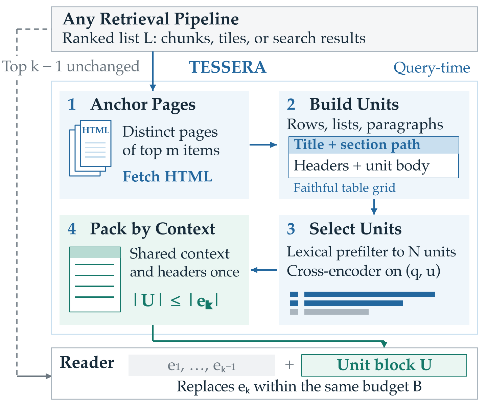
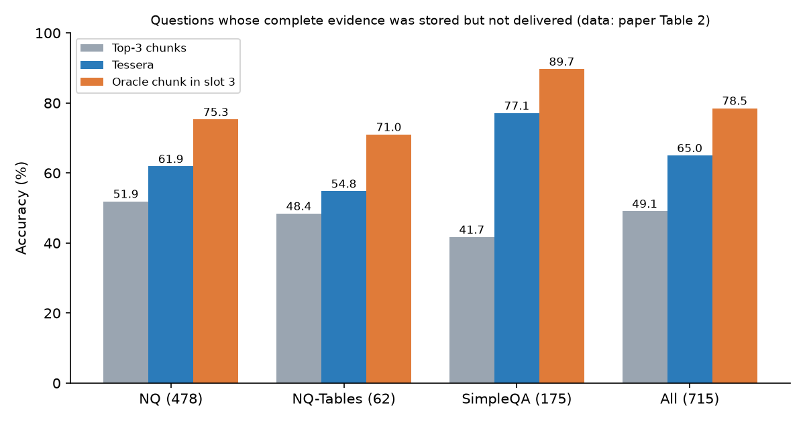

SHARE
Ask Wikipedia who produced Willy Wonka and the Chocolate Factory, and the answer sits in the producer row of the page's infobox. Text extraction drops the two names in that cell, the reader model sees only the director, and it answers wrong. Tracing answer evidence from page source to reader input over all of English Wikipedia, this paper finds such loss is common: for 7.6% of questions the evidence never enters the index intact, and 81% of those losses are table cells, table headers or captions. Tessera leaves retrieval alone. Just before reading, it re-splits the top-ranked pages into small units such as one table row or one list item, adds the title, section and headers back, and packs the relevant ones into the same token budget. Answer accuracy rises by 5 to 6 points on both text and screenshot pipelines, and a 3K-token Tessera context reaches 76.1%, above 12K tokens of raw chunks.
Teams building web RAG or search question answering should read this paper, because it measures a problem many teams sense but rarely quantify: the right page is retrieved, but the wrong part of it reaches the model. The fix needs no new index, no training, and no change of retriever or reader; it is one layer between retrieval and reading. It beats 14 common remedies at a matched budget, and inside a multi-step search agent it lifts accuracy on FRAMES (a multi-hop benchmark needing several Wikipedia articles per question) from 59.2% to 64.4%. The caveats: all experiments use Wikipedia, whose tables and infoboxes are well structured, and the lexical prefilter still misses some evidence units.
What problem is it solving?
A standard web RAG pipeline flattens each page to plain text with an extractor, cuts it into fixed-length chunks, retrieves and reranks, and hands the top few chunks to a reader. A screenshot pipeline cuts the rendered page into image tiles instead. Both share one design choice: the same chunk is the unit of indexing, the unit of ranking, and the unit of reading.
Tracing evidence for 7,378 questions from source to reader input, the paper finds two main loss points.
| Where evidence is lost | Share | Consequence |
|---|---|---|
| Stored intact in a chunk, but not in the top three | 9.7% of questions | Putting that chunk in slot three lifts accuracy on them from 49.1% to 78.5% |
| Never stored intact in any chunk | 7.6% of questions | 81% are table cells, headers or captions; no retriever can recover them |
| Table cell stored, but separated from its headers | 31% of such cells | The number loses its meaning |
The opening example, illustrated:
| What the reader gets | Answer |
|---|---|
| Extracted infobox: Directed by Mel Stuart, Written by Roald Dahl, producer cell empty | "Mel Stuart", wrong |
| Tessera unit: page title › poster, Directed by: Mel Stuart; Produced by: Stan Margulies; David L. Wolper | Both producers, right |
Chunk size is tuned for retrieval, but the answer often fills one sentence or one table row, and a budget of three chunks leaves the one holding it outside. The top ten reranked chunks reach the gold page for 92.7% of questions, yet the evidence reaches the reader for only 59.5%. Standard remedies, such as better extraction, neighbor expansion, structural prefixes, four times the reader budget, or screenshots, each add at most 2.2 points.
Pipeline overview

Look at the dashed line on the left: the top k-1 items pass through unchanged, and only the last item is replaced, so the reader budget stays the same. "Pooled accuracy" below counts every question across the three datasets together, not an average of per-dataset accuracies.
| Step | What it does | Default |
|---|---|---|
| Anchor pages | Take the distinct pages of the top m items and fetch their HTML from the crawl snapshot used for indexing | m=10 |
| Build units | Walk the page; each paragraph, list item and caption is a unit, and each table or infobox row is a unit, completed with title, section path and headers | about 150 per page |
| Select units | Pool units from all anchor pages (about a thousand), keep the 100 sharing the most content words with the question, then score with the pipeline's own reranker, BGE-reranker-v2-m3 | N=100 |
| Pack | Fill the budget of item k by score; rows sharing a context print the title and headers once | budget counted by the reader's tokenizer |
Formally, the reader context changes from to with .
Design 1: rebuild a faithful table grid
Web tables use merged cells, multi-row headers, title rows and group rows. Pairing cells with the first header row in source order mislabels or drops cells in 32.5% of the 2.9 million rows in the experiments. Tessera expands every rowspan and colspan, treats full-width leading rows as titles, stacks multi-row headers, carries group rows down as context, keys infobox rows by their first cell, and keeps line breaks inside multi-value cells.
| Method | Row for B. Okafor becomes |
|---|---|
| Source-order pairing | Name: B. Okafor; Term: 2004; Party: 2010 |
| Faithful grid | State › History › Governors: Name: B. Okafor; Term of office › Took office: 2004; Term of office › Left office: 2010; Party: Liberal |
This shows that without the grid, the reader would take a leaving year for a party, and the merged party value would vanish.
Design 2: complete context for scoring, share it for printing
A bare row such as "Harbhajan Singh | not out | 6 | 3 | 0 | 1 | 200.00" does not say which match or which column holds the strike rate. The reranker scores completed text, but packing groups units by context and prints the context path and headers once. For the question about Harbhajan Singh's strike rate in the 2015 IPL (Indian Premier League cricket) final, the baseline chunks lacked the Mumbai batting rows and the reader said he did not bat; Tessera packed the grouped scorecard rows and the reader answered 200.00. Hoot says

Repeat context on every row
- Row 1
- context + headers + row = 40 + 20
- Row 2
- context + headers + row = 40 + 20
- Total
- 120 tokens
The reader reads the same title and headers twice.
Tessera: print by group
- Row 1
- context + headers + row = 40 + 20
- Row 2
- row only = 20
- Total
- 80 tokens
The saved budget holds more rows, so one slot fits about 14 lines instead of about 11 units.
Illustrative: the context line plus header line cost 40 tokens, each data row 20 tokens, two rows selected from one group. Source: packing rule from the Design 2 text; token counts are illustrative
| Unit form | Pooled gain |
|---|---|
| Bare units without context | +1.8 |
| Completed units | +4.6 |
This shows the gain comes from completion, not merely from smaller units. Grouped packing fits about 14 lines per slot instead of 11.
Design 3: keep k-1 chunks, replace only the last
Top chunks carry coherent prose and the retriever's ranking signal. Using units only loses 0.6 to 1.9 points to the mixed context at every budget, while the mixed context beats chunks-only in all 51 comparisons by 1.8 to 6.7 points. For screenshots, the unit block takes the token cost of one tile; for agents, each search call returns k-1 items plus a unit block. Building units costs 15 ms per page on one CPU core and scoring about 0.2 A100 GPU-seconds per question.
Main results
The corpus is the August 2025 English Wikipedia (7.06M articles) with 7,851 questions from NQ, NQ-Tables and SimpleQA; the reader is Qwen3.5-4B with three evidence items.
| Pipeline | Pooled gain |
|---|---|
| Hybrid text + BGE reranker | +5.0 |
| PixelRAG text + BGE reranker | +6.2 |
| PixelRAG screenshots + Qwen3-VL reranker | +5.6 |
| Gemma 4 31B reader, text | +4.7 |
| Gemma 4 31B reader, screenshots | +5.9 |
This shows the gain holds across index modality and reader size; SimpleQA gains most, 6.9 to 8.2 points, because long-tail facts live in infoboxes and tables.
| Method (3K evidence tokens) | Pooled | Change |
|---|---|---|
| Top-3 chunks | 70.70 | — |
| RAPTOR | 71.91 | +1.21 |
| HtmlRAG | 70.30 | -0.41 |
| Docling as unit builder | 74.97 | +4.27 |
| Tessera | 75.74 | +5.03 |
| Query2doc + Tessera | 76.65 | +5.95 |
This shows retrieval-side methods only reorder chunks. Docling, which also serializes rows with headers, works well, but Tessera is 0.8 points higher and parses over 500 times faster.

Pooled, Tessera moves these questions from 49.1% to 65.0%, recovering 54% of the oracle gain.
| Each search returns | FRAMES | MuSiQue | Searches | Final context |
|---|---|---|---|---|
| Top-3 chunks | 59.22 | 32.40 | 2.41 | 12.8K |
| Top-4 chunks | 59.22 | 32.30 | 2.18 | 14.5K |
| Top-2 + Docling | 57.65 | 32.10 | 2.65 | 13.6K |
| Top-2 + Tessera | 64.44 | 33.50 | 2.19 | 11.7K |
This shows structured evidence lets the agent search less, read less and answer more; tabular FRAMES questions gain 9.3 points.
Limitations
First, only Wikipedia is tested. Its markup is regular; product pages, forums and PDF-derived HTML are messier, and the grid rules need fresh validation.
Second, the lexical prefilter misses evidence. On the 715 oracle questions Tessera trails the oracle by 13.4 points, about 96 questions; 20 of them have evidence inside anchor pages that the prefilter dropped. A larger prefilter changes accuracy by at most 0.3 points, which means semantic matching is needed.
Third, anchoring depends on the retriever. 61 of those 96 lie outside the anchor pages, and when the gold page is not anchored Tessera only moves accuracy from 39.9% to 43.7%.
How a search or recommendation team could try it
- Sample questions from the production QA pipeline and log the pages behind the top ten results, with their HTML or structured source.
- Have a strong model mark the supporting evidence and trace by string match where it stops: extraction, chunking, retrieval, reranking, or reader input.
- If loss concentrates in tables, spec sheets or attribute lists, build per-page units: one per paragraph and list item, one per table row, with title, section path and column names.
- Score units with the existing reranker and replace only the last reader item, keeping the token budget.
- Compare accuracy on the same questions, split by table-only and prose-only evidence.
- For search agents, attach the unit block to each search tool response and track accuracy, search count and context length.
Verdict
A training-free delivery layer that re-splits retrieved pages by structure adds a steady 5 to 6 points on Wikipedia QA.
| Dimension | Assessment |
|---|---|
| Importance | High: many web facts live in tables and infoboxes that chunking loses |
| Novelty | Medium-high: units and header completion are known; decoupling retrieval and reading units, with loss tracing, is new |
| Evidence | High: three pipelines, several retrievers and readers, 14 baselines, agents; only Wikipedia |
| Engineering cost | Low: parse a few pages at query time, reuse the reranker, 15 ms per page |
| Worth trying | Yes, especially where answers sit in tables, specs or attribute lists |
How did this read for you?
Hoot made a note. Thanks for the feedback.
One tap, no sign-in; tap again to undo. Only anonymous counts are kept, never who you are.
Discussion
Add experiment details, reproduction notes or a different take. Requires a GitHub sign-in.
Loading the discussion…